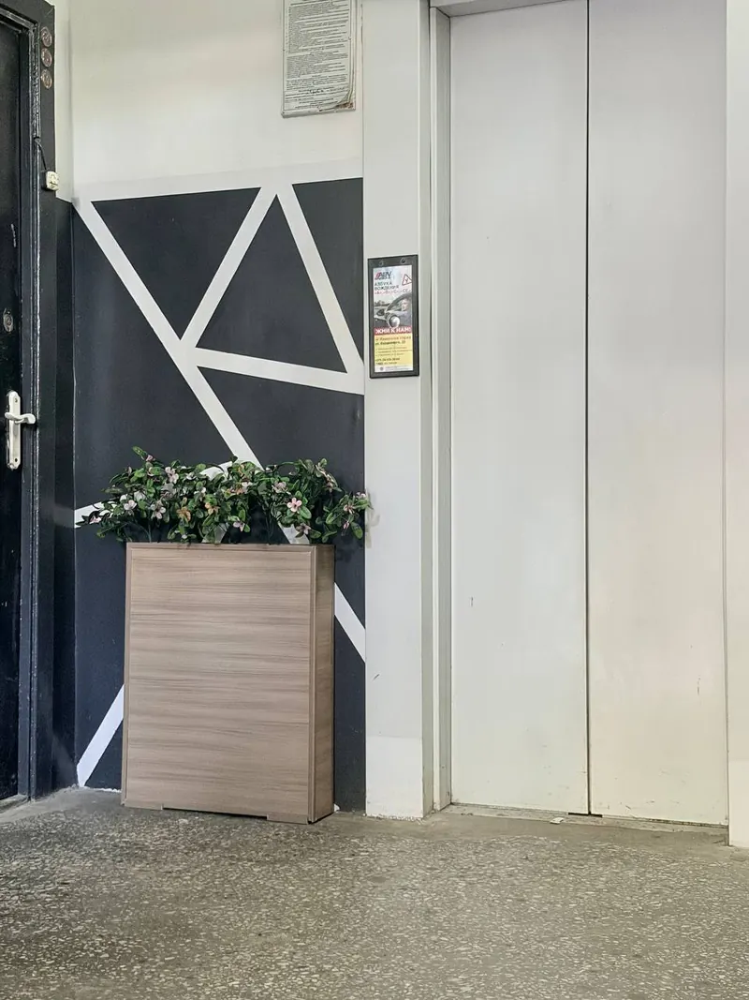
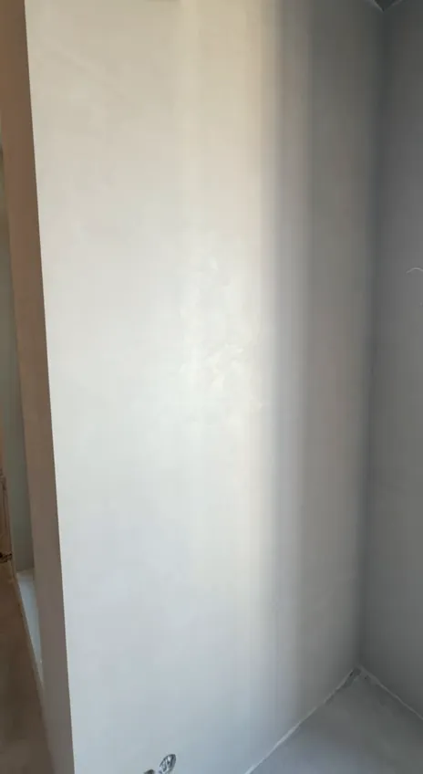
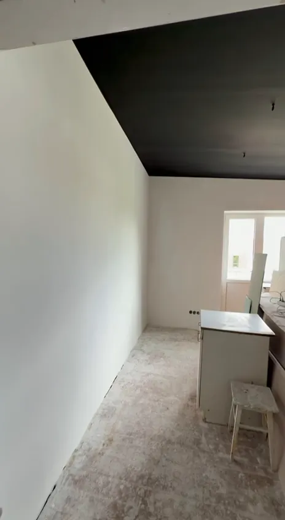
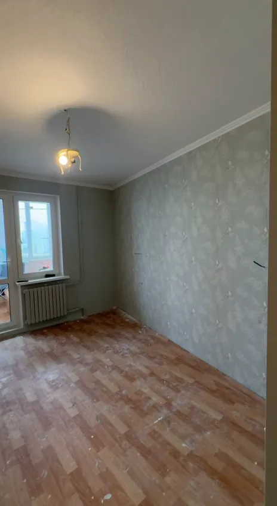
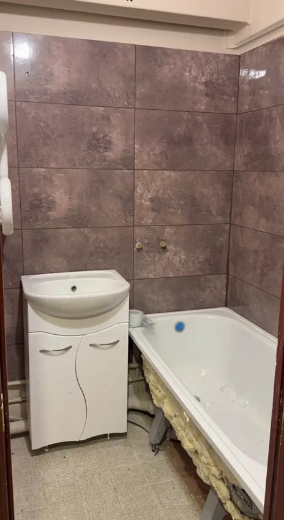
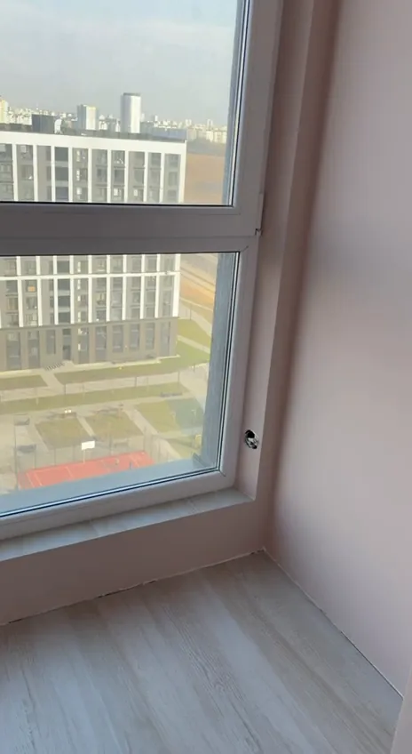
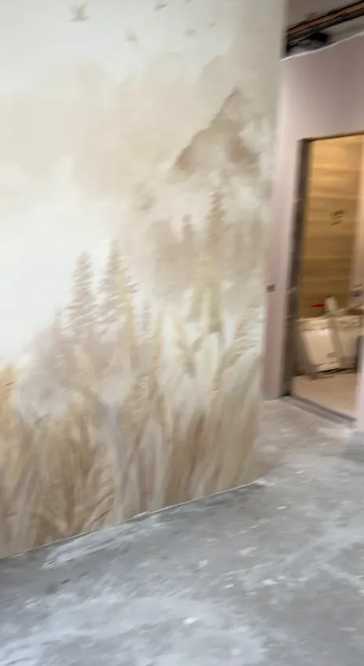
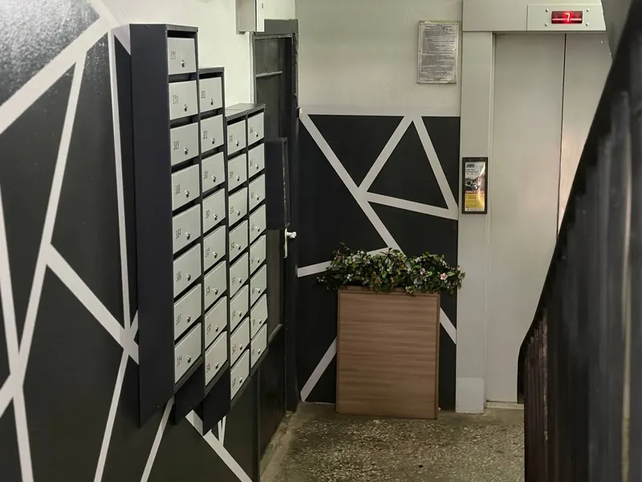

Тынкоўка, афарбоўка і аздабленне ў Мінску
Кватэры ў новабудоўлях і другасным жыллі, санвузлы, пад’езды. Выраўноўваем сцены, фарбуем, клеім шпалеры, кладзём плітку і робім дэкаратыўнае аздабленне: роспіс, трафарэты, геаметрыю.

Што робім
Чарнавое і чыставое аздабленне сцен і столяў — ад тынкоўкі да дэкаратыўнага роспісу.
-

Тынкоўка і выраўноўванне сцен
Падрыхтоўка асновы, тынкоўка, вывядзенне вуглоў і плоскасцей пад афарбоўку або шпалеры.
-

Шпаклёўка і афарбоўка
Сцены і столі, у тым ліку цёмныя і каляровыя. Чыстыя межы колеру па малярнай стужцы.
-

Шпалеры
Наклейванне на падрыхтаваныя сцены, падгонка малюнка, акуратныя стыкі каля вуглоў і адкосаў.
-

Плітка ў санвузлах
Абліцоўка сцен ваннай і прыбіральні, прымыканне да ванны і каробаў.
-

Адкосы вокнаў і ўваходных дзвярэй
Тынкавыя і афарбаваныя адкосы, роўныя вуглы і прымыканні да рамы.
-

Дэкаратыўнае аздабленне
Роспіс сцен, трафарэтныя ўзоры, геаметрыя з ліній, фактурная тынкоўка.
-

Рамонт пад’ездаў
Афарбоўка сцен і лесвічных клетак, дэкор, аздабленне тамбураў і холаў каля ліфта.
Нашы аб’екты
Фота і відэа з аб’ектаў у Мінску. Відэа адкрываецца па націсканні.
-
Хол каля ліфта: графіт і белыя лініі -
Роспіс сцяны ў новабудоўлі -
Пляцоўка каля паштовых скрынак -
Ванная ў плітцы -
Трафарэт «лісце» па фактурнай тынкоўцы -
Цёмная столь і белыя сцены -
Мяжа колеру па малярнай стужцы -
Геаметрыя на сценах пад’езда -
Адкосы ўваходных дзвярэй і шпалеры -
Тамбур на ўваходзе ў пад’езд -
Пакоі ў другасным жыллі: афарбоўка і шпалеры -
Прыбіральня: плітка і афарбоўка -
Лесвічная пляцоўка пасля афарбоўкі -
Тынкоўка сцен у новабудоўлі -
Пакой у новабудоўлі пасля аздаблення сцен
Адкуль бяруцца роўныя лініі
Накрываем тое, што не рамантуем
Падлогу, вокны і мэблю закрываем плёнкай, рамы і суседнія паверхні — малярнай стужкай.
Мяжа колеру — па стужцы
Цёмная столь, каляровая сцяна, адкос: стык праходзіць па малярнай стужцы, без «пілы» і падцёкаў.
Дэкор — на падрыхтаванай сцяне
Роспіс і трафарэты наносім на выраўнаваную аснову, таму малюнак не паўтарае няроўнасцей.
Як працуем
Заяўка
Патэлефануйце, напішыце ў месенджар або пакіньце заяўку на сайце. Можна адразу даслаць фота памяшкання.
Агляд і замер
Глядзім аснову, мераем плошчу, абмяркоўваем матэрыялы і тэрміны.
Каштарыс
Фіксуем пералік работ і кошт да пачатку.
Падрыхтоўка
Накрываем падлогу, вокны і мэблю, рыхтуем аснову.
Аздабленне
Тынкоўка, шпаклёўка, афарбоўка, шпалеры, плітка, дэкор — па ўзгодненым плане.
Прыёмка
Праходзім аб’ект разам з вамі і выпраўляем заўвагі.
Колькі каштуе
Кошт называем пасля агляду. Адна і тая ж афарбоўка каштуе па-рознаму на роўнай сцяне ў новабудоўлі і на старой тынкоўцы ў другасным жыллі.
Ад чаго залежыць кошт
- Стан асновы: колькі выраўноўваць і чым
- Плошча і вышыня столяў
- Матэрыялы і іх клас
- Складанасць: цёмныя колеры, роспіс, шмат вуглоў і адкосаў
- Тэрміны
Дашліце фота і плошчу — так размова пра кошт адразу будзе прадметнай.
Пакінуць заяўкуЧастыя пытанні
Можна даведацца кошт без выезду?
Прыблізна — па фота і плошчы. Дакладна — пасля агляду: стан сцен і столяў па фота бачны не заўсёды.
Працуеце ў новабудоўлях без аздаблення?
Так. Прыклады — у раздзеле «Нашы аб’екты»: тынкоўка сцен, адкосы, роспіс.
Робіце рамонт пад’ездаў?
Так: афарбоўка сцен і лесвічных клетак, дэкор, аздабленне холаў каля ліфта. Фота — у раздзеле «Нашы аб’екты».
Можна замовіць толькі частку работ?
Так, напрыклад толькі афарбоўку столяў або толькі адкосы. Аб’ём абмяркоўваем на аглядзе.
Што падрыхтаваць да прыходу майстроў?
Вынесці рэчы, якія можна вынесці, або ссунуць мэблю да цэнтра пакоя — астатняе накрыем плёнкай.
Пакіньце заяўку
Адкажам і дамовімся пра агляд. Можна адразу напісаць у месенджар.
- Тэлефон
- +375 (__) ___-__-__
- Дзе працуем
- Мінск
- Калі на сувязі
- [графік работы]